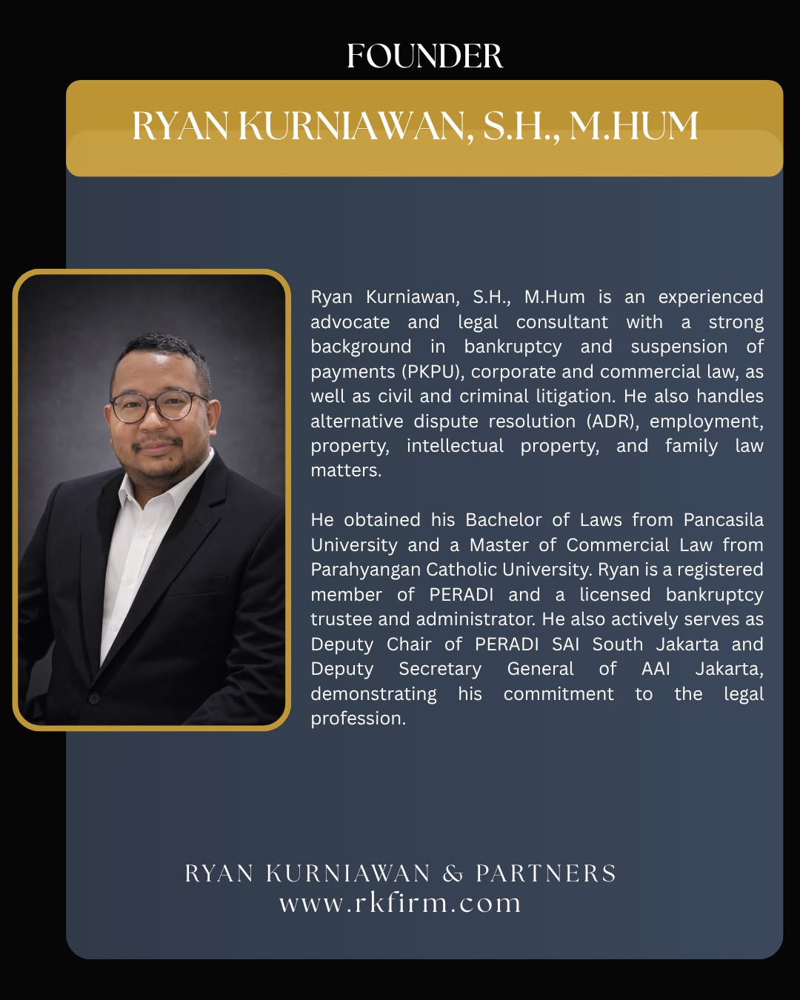

RYAN KURNIAWAN & PARTNERS
Legal understanding.
Practical perspective.
Lasting commitment.
Discover our firm01 / THE FIRM
Context first.
Considered advice.
Every legal matter has a wider context. We take the time to understand yours.
Ryan Kurniawan & Partners brings experience across corporate and commercial law, bankruptcy, litigation and personal legal matters. Our approach connects legal analysis with the decisions you need to make.
Meet our founderLegal counsel.
A wider perspective.
Explore our practice areas and the experience behind our advice.
Explore expertiseCorporate & Commercial
Advice on business structures, contracts and corporate actions, with your commercial context in view.
View practiceDisputes & Litigation
Considered advice and representation in civil and criminal litigation and alternative dispute resolution.
View practiceRestructuring & Insolvency
Advice on bankruptcy and PKPU, informed by experience as a licensed trustee and administrator.
View practiceNotarial Services
Explore deeds, agreements and document services with Nadia Difa Khairunnisa, S.H., M.Kn.
Select a service02 / EXPERTISE
A clear view of
your options.
From everyday business decisions to complex disputes. Explore how we can help.
01Corporate & Commercial
02Disputes & Litigation
03Restructuring & Insolvency
04Employment
05Property & Intellectual Property
06Family & Personal Matters

03 / OUR FOUNDER
Ryan Kurniawan,
S.H., M.Hum
Advocate & Legal Consultant
- Bachelor of Laws · Pancasila University
- Master of Commercial Law · Parahyangan Catholic University
- PERADI member
- Licensed bankruptcy trustee & administrator
Experience across business, disputes and the legal issues that connect them.
Ryan’s practice includes bankruptcy and PKPU, corporate and commercial law, civil and criminal litigation, alternative dispute resolution, employment, property, intellectual property and family law.
His professional service includes Deputy Chair of PERADI SAI South Jakarta and Deputy Secretary General of AAI Jakarta.
Discuss your matterA DEDICATED NOTARIAL PRACTICE
Important decisions.
Properly documented.
Explore notarial services with Nadia Difa Khairunnisa, S.H., M.Kn., Notaris Kabupaten Indramayu.
Information on deeds, document requirements and arranging a consultation.
Explore notarial servicesLET’S TALK
Start with a conversation.
Tell us about your matter. We’ll help you identify the next step.
RK and notarial enquiries share the contact channels above. Please state which service you need.